Paralelismo a Nivel de Instrucción
3.1 Instruction Level Paralelism
El paralelismo de instrucción es aplicable dentro de cada bloque básico (secuencia de instrucciones sin saltos). Sin embargo, la longitud media de un bloque básico es de 3 a 6 instrucciones lo que reduce bastante su posible aprovechamiento. Una técnica para mejorar el aprovechamiento del ILP dentro de un bucle se conoce como desenrollamiento de bucles. También podemos entrelazar ejecución de instrucciones no relacionadas y rellenar detenciones con instrucciones.
El desenrollamiento de bucles consiste en entrelazar la ejecución de instrucciones de varias iteraciones de un bucle. Al tratarse de instrucciones no relacionadas no generan dependencias y permiten un mejor aprovechamiento de la arquitectura segmentada.
(Cuando en los enunciados pone planificación de lazo se refiere a que reordenemos o desenrollemos el código que nos dan).
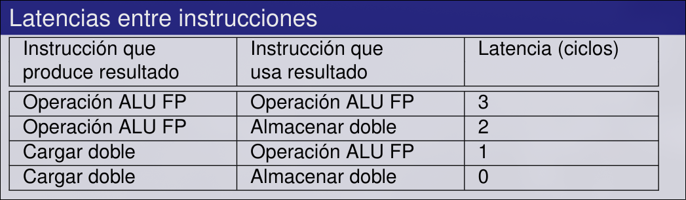
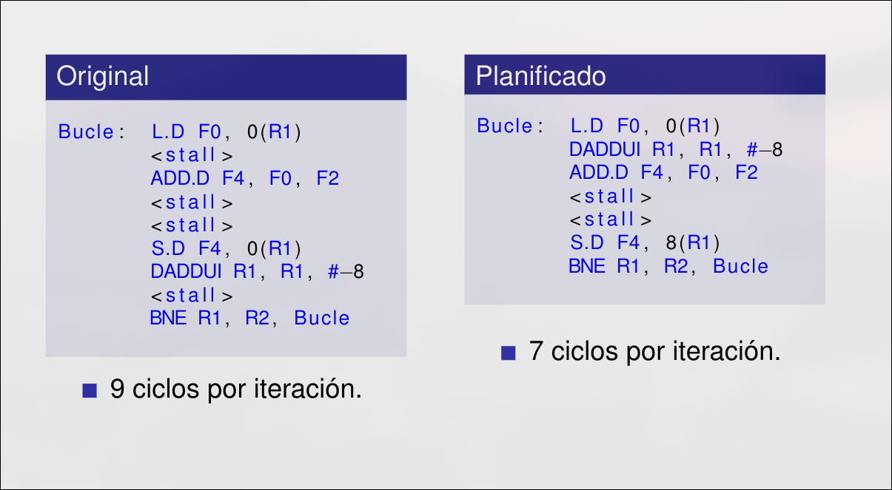
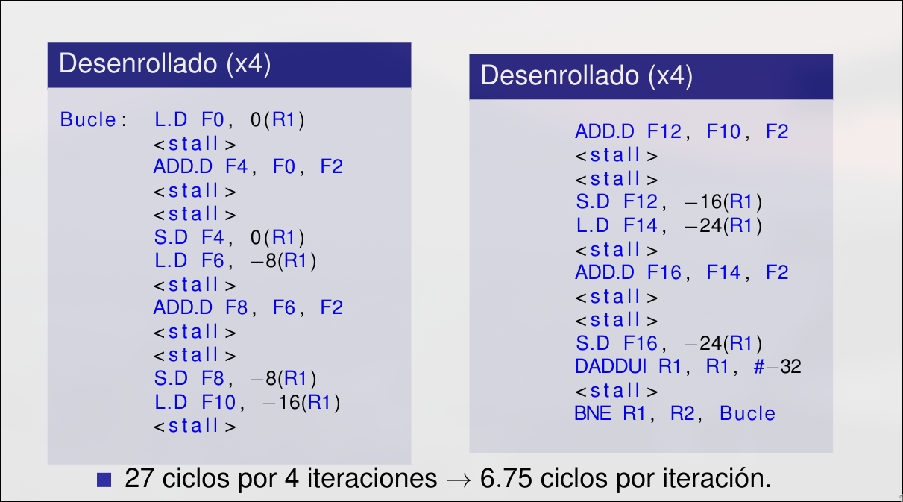
3.2 Emisión Múltiple
La segmentación permite ejecutar varias instrucciones a la vez. El objetivo de explotar el ILP (Instruction Level Paralelism) es optimizar el CPI:
Hay dos alternativas para mejorar el ILP:
- Hacer más profundo el pipeline (tema2)->menos trabajo por etapa ->
más corto -> mayor - Emisión múltiple (tema3) -> se replican las etapas del pipeline en multiples pipelines en los que se comenzarán varias instrucciones en cada ciclo. Entonces
, por lo que en su lugar se usa el IPC (numero de instrucciones por ciclo) como medida de rapidez.
3.3 Emisión Múltiple Estática
En la emisión múltiple estática el compilador agrupa instrucciones en paquetes de emisión para emitirlas juntas. Un paquete de emisión es un grupo instrucciones que pueden ser emitidas en un solo ciclo, y viene determinado por los recursos del pipeline. Usan planificación estática donde el compilador debe eliminar algunos/todos los riesgos:
- En un paquete de emisión sólo puede haber instrucciones sin dependencias entre ellas (si no, no se podrían ejecutar simultáneamente).
- Posiblemente haya dependencias entre paquetes -> su tratamiento varía entre ISAs. El compilador debe saberlo.
- Se rellenará el resto del paquete con NOP si no se encuentran las instrucciones adecuadas.
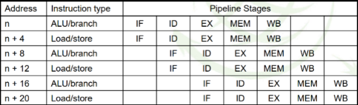
Para poder hacer la emisión dual debemos añadir hardware adicional:
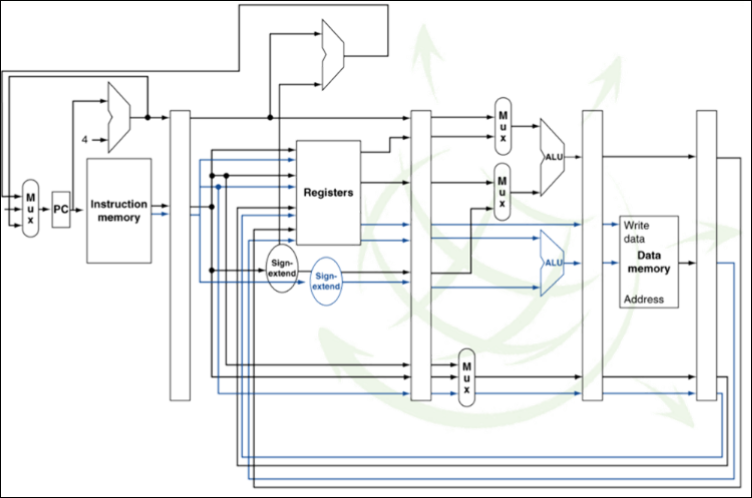
Las arquitecturas VLIW (Very Long Instruction Word) ven los paquetes como una instrucción muy larga por ejemplo:
- Una operación con enteros o una operación de salto
- Dos operaciones independientes en punto flotante
- Dos referencias a memoria independientes
Es necesario encontrar paralelismo estáticamente ya que no hay hardware de detección de riesgos.Gran tamaño del código.Esto implica hardware de la CPU más simplificado, menor consumo de potencia.
Se forman paquetes de emisión con una instrucción ALU o un salto seguida de una instrucción de load o store. Las instrucciones no utilizadas se rellenan con NOP.
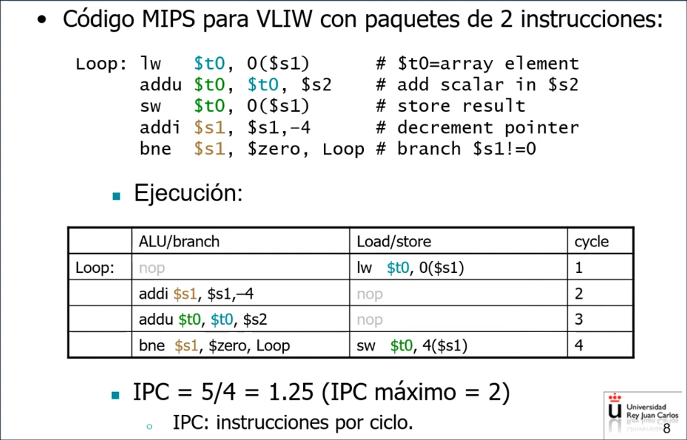
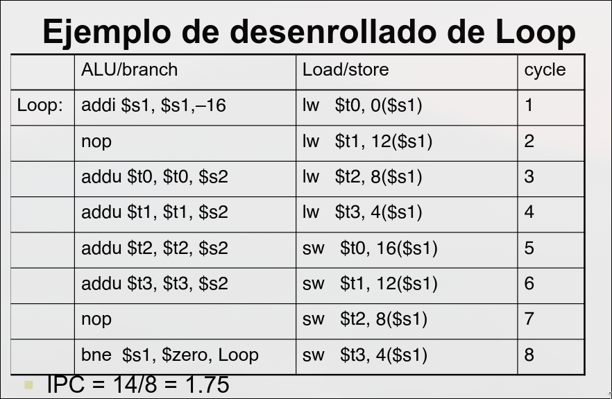
# 3.4 Emisión Múltiple Dinámica La **emisión múltiple estática** la **cpu** examina el flujo de instrucciones y selecciona las que se deben emitir en cada ciclo. Los procesadores que la realizan denominan **procesadores superescalares**.Evita la necesidad de planificación del compilador, ya que se realiza por hardware, por lo que tampoco debe conocer como es el hardware. La CPU asegura la semántica del código, pero da lugar a CPUs más complicadas en cuanto a hardware. Permite a la CPU emitir varias instrucciones que:
- Se ejecutan fuera de orden (para evitar paradas).
- Terminan fuera de orden en muchos casos.
- Pero el WB respeta la semántica del programa
La planificación dinámica consiste en reordenar las instrucciones para reducir las paradas a la vez que se mantiene el flujo de datos del programa. Puede gestionar casos en los que las dependencias no se conocen en tiempo de compilación.
Motivos para hacer planificación dinámica:
- No todas las paradas son predecible (por ejemplo, los fallos de caché).
- No siempre se pueden planificar estáticamente, por ejemplo, si hay instrucciones de salto, ya que el resultado del salto se determina dinámicamente.
- Diferentes implementaciones de un ISA pueden tener diferentes latencias y dar lugar a diferentes riesgos.
- Instruction commit: proceso que se produce cuando una instrucción actualiza su resultado en el archivo de registros.
Tenemos el siguiente camino de datos:
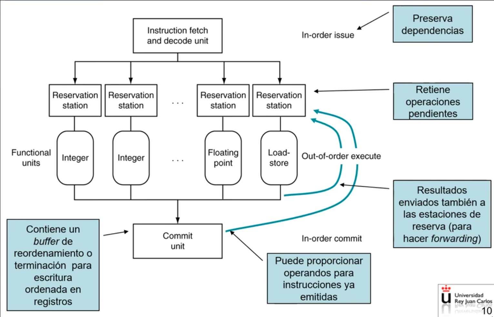
-
Lectura de múltiples instrucciones en orden
-
Decodificación de múltiples instrucciones en orden
-
Distribución/Emisión de multiples instrucciones en orden: Cada instrucción se distribuye en una estación de reserva, y se almacena también en el buffer de terminación.
-
Se realiza el renombramiento de registros para resolver dependencias WAR y WAW.
-
Si los operandos fuente de la instrucción están disponibles en el banco de registros o en el buffer de terminación/reodenamiento, se copian en la estación de reserva, y se realiza la emisión de la instrucción (envío a una unidad de ejecución) en cuanto la unidad está disponible.
-
Si falta algún operando fuente en la instrucción (por una dependencia), la instrucción queda retenida en la estación de reserva hasta que el dato está disponible; cuando la unidad funcional correspondiente produce el dato esperado, se copia en la estación de reserva y la instrucción queda lista para su ejecución. El renombrado de registros se realiza mediante estaciones de reserva (RS), que tienen una entrada por cada instrucción en ejecución.
Campos de una entrada en la RS:
: indica si la entrada está ocupada por una instrucción o libre : campo de código de instrucción. y : operandos de entrada de la instrucción: proceden de registros o de caminos de adelantamiento de las unidades de ejecución. Pueden ser un identificador de registro o de renombrado, es decir, que su valor está siendo calculado. y : indica si los operandos y son válidos. : indica si la instrucción está lista para la emisión.
-
-
Ejecución de la instrucción en la unidad funcional: al terminar, se escribe el resultado en el buffer de terminación (y en las estaciones de reserva que están a la espera)
-
Terminación: a medida que los resultados se copian en el buffer de terminación, se escriben en el banco de registros en orden y las instrucciones se terminan
-
Retirada: las instrucciones de almacenamiento realizan la escritura en memoria
Algoritmo de Tomasulo
Algoritmo diseñado para permitir a un procesador ejecutar instrucciones fuera de orden, este algoritmo permite el lanzamiento de las instrucciones de WAR y WAW sin detener la ejecución, del mismo modo utiliza un bus de datos común (CDB) en el que los valores calculados son enviados a todas las estaciones de reserva que lo necesiten Emisión:
- Se lee la instrucción del buffer de instrucciones.
- Se reserva una estación si está disponible.
- Se renombra el destino si es necesario.
- Si los operandos están listos, se colocan. Si no, se apunta al productor (quién lo generará).
Ejecución:
- Una vez que todos los operandos están listos, la instrucción se ejecuta.
- La ejecución puede tardar varios ciclos.
Escribir resultado:
- El resultado se envía por el CDB.
- Todas las unidades que esperaban ese resultado lo reciben.
- El registro de destino se actualiza si aún corresponde a esa instrucción.
Dependencias:
- RAW (Read After Write): Tomasulo espera hasta que el dato esté disponible.
- WAW (Write After Write): Se evita con renombramiento de registros.
- WAR (Write After Read): Se evita porque las instrucciones no escriben directamente hasta la fase final.
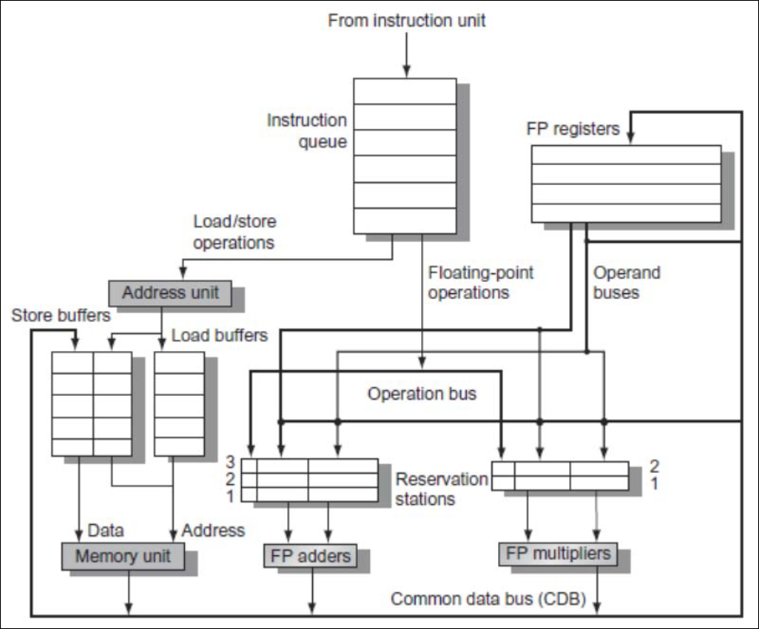
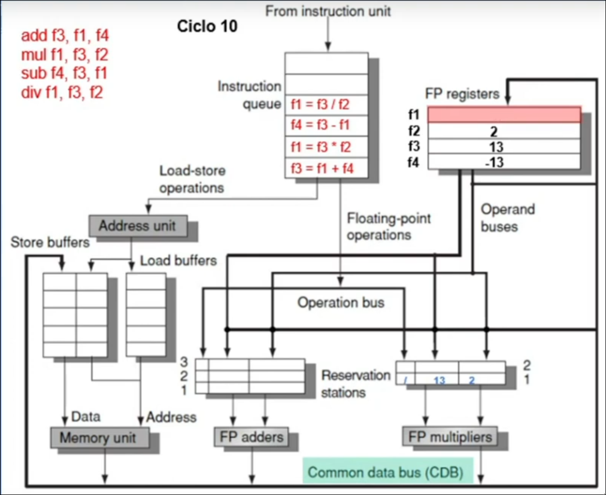
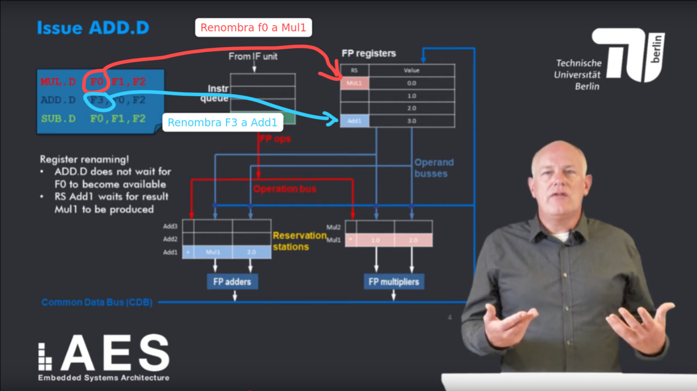
Manda huevos ir hasta Alemania para tener una explicación decente
3.4 Especulación Basada en Hardware
La especulación consiste en hacer conjeturas sobre de lo que hará una instrucción.
- Comenzar la operación tan pronto como sea posible
- Comprobar si se acertó:
- Si se acertó: completar la operación
- Si no se acertó: retroceder y corregir
Se realiza tanto en la emisión multiple como en dinámica.
Tipos de especulación:
-
Especulación realizada por el compilador: reordena instrucciones (ej, mover la carga antes de un salto). Si la especulación es incorrecta, puede incluir instrucciones de arreglo para recuperarse.
-
Especulación realizada por hardware: busca por adelantado instrucciones para ejecutar. Mete los resultados de ejecutar la instrucción en un buffer hasta que se determine si se necesitan realmente, si la especulación es incorrecta se vacían los buffers.
Especulación acerca del Salto
Consiste en especular acerca del resultado de un salto y continuar emitiendo instrucciones asumiendo que son las correctas. No se actualizan los registros (Instruction Commit) hasta que se determine el resultado de salto.
Especulación acerca de la Carga
Trata de evitar el retardo por carga y fallo caché.
- Predecir la dirección efectiva
- Predecir el valor cargado
- Pasar los valores almacenado a la unidad de carga No se actualizan los registros hasta que se resuelve la especulación.
Buffers de Reordenamiento (ROB)
Posibles estados para una instrucción:
- En ejecución: la instrucción no acabó de ejecutarse
- Finalizada: la ejecución acabó y se escribe el resultado en un registro renombrado o en un buffer previo a escribir memoria (si es un store)
- Completada: modifica los registros del núcleo.
- Retirada:
- Si el destino es un registro: coincide con completada
- Si el destino es la memoria: se escribe en la caché de datos
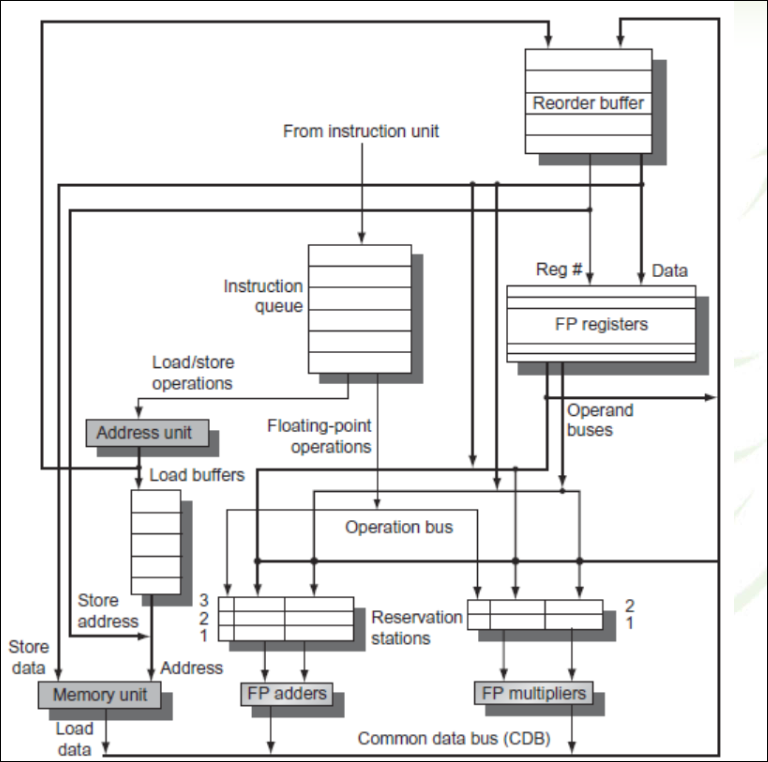